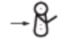

首页
首页 返回
返回| 评分 | -1 | 0 | 1 | 2 | 3 | 4 | 5 | |
|---|---|---|---|---|---|---|---|---|
| 神经肌肉成熟度 | 体态 | |||||||
| 方窗 |  |
|||||||
| 前臂回弹 | ||||||||
| 腘部成角 | ||||||||
| 围巾征 |  | |||||||
| 足跟至耳朵 | ||||||||
| 生理成熟度 | 皮肤 | 脆弱、粘稠、透明 | 红色、半透明 | 粉红色、光滑、可见到血管 | 表皮干裂、较为苍白、可看到一些血管 | 皮肤干燥、罕见血管 | 皮肤干燥、看不见血管 | 坚韧、干裂较严重、起皱褶 |
| 胎毛 | 无 | 稀少 | 丰富 | 稀薄 | 出现光秃的区域 | 大部分没有胎毛分布 | ||
| 足底纹理 | 脚趾至足跟长40~50mm：-1 <40mm：-2 | 脚趾至足跟长>50mm，脚底无皱褶 | 模糊的红色皱褶 | 脚前部有些横的皱褶 | 脚前2/3有皱褶 | 整个脚底有皱褶 | ||
| 乳头形成 | 难认，无乳晕 | 仅可看到其存在 | 乳晕平坦，无突起 | 乳晕有彩斑，突起约1~2mm | 乳晕突起约3~4mm | 乳晕突起约5~10mm | ||
| 眼睛/耳朵 | 眼睑闭合 松弛：-1; 紧密：-2 | 眼睑分开，耳朵扁平易折叠 | 耳翼有些弧度、柔软、可慢慢弹起 | 耳翼弧度良好，柔软，可反弹 | 耳翼软骨变硬，耳朵可立即反弹 | 耳翼软骨厚，耳朵变硬 | ||
| 生殖器（男） | 阴囊表面光滑，无皱褶 | 睾丸未下降，阴囊无皱褶 | 睾丸位于腹股沟，阴囊有些皱褶 | 睾丸开始下降，阴囊有些皱褶 | 睾丸已下降，皱褶多 | 睾丸已下降，外观下垂，皱褶多且深 | ||
| 生殖器（女） | 阴蒂大且突出，小阴唇平坦 | 阴蒂突出，小阴唇略微突出 | 阴蒂小，阴唇突出 | 大、小阴唇同样突出 | 大阴唇变大、小阴唇变小 | 阴蒂及小阴唇完全覆盖 |
| 分值 | 周龄 |
|---|---|
| -10 | 20 |
| -5 | 22 |
| 0 | 24 |
| 5 | 26 |
| 10 | 28 |
| 15 | 30 |
| 20 | 32 |
| 25 | 34 |
| 30 | 36 |
| 35 | 38 |
| 40 | 40 |
| 45 | 42 |
| 50 | 44 |
说明
将以上神经肌肉成熟度和生理成熟度的各项评分相加得出总分，即可得出胎龄。